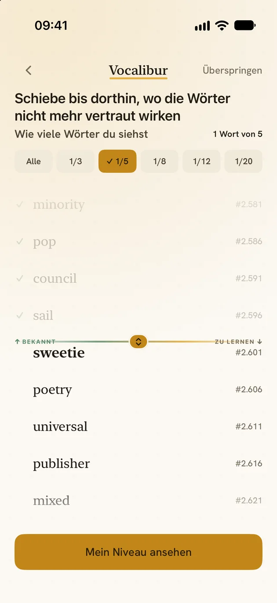

Welche Wörter lernen?
Starte mit dem, was du schon kennst.
Scrolle durch die Wortliste, vom häufigsten bis zum seltensten Wort, und wähle deinen Ausgangspunkt. Danach führt Vocalibur neue Wörter nach Häufigkeit ein: 30.000 Karten, Orientierung nach Niveau und 55 Themen.